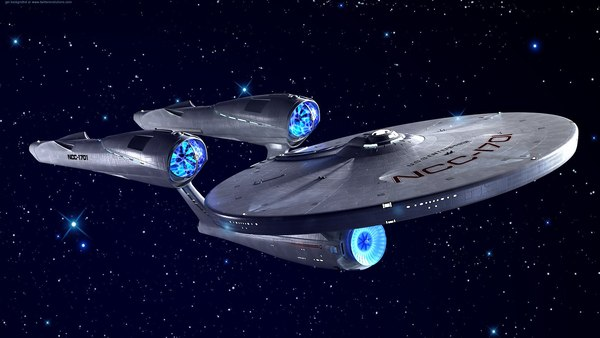
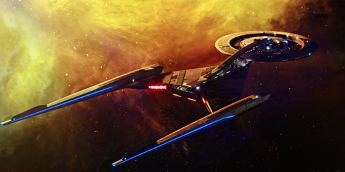
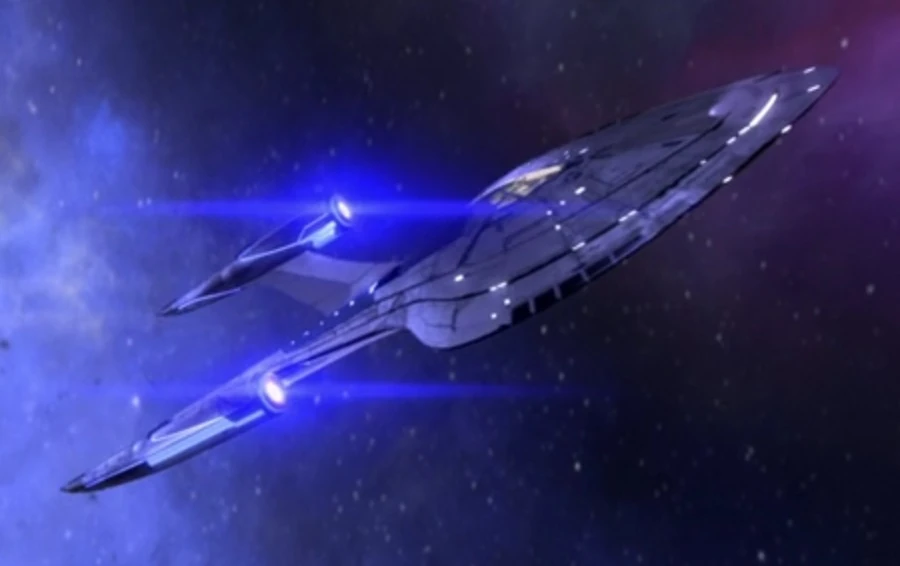
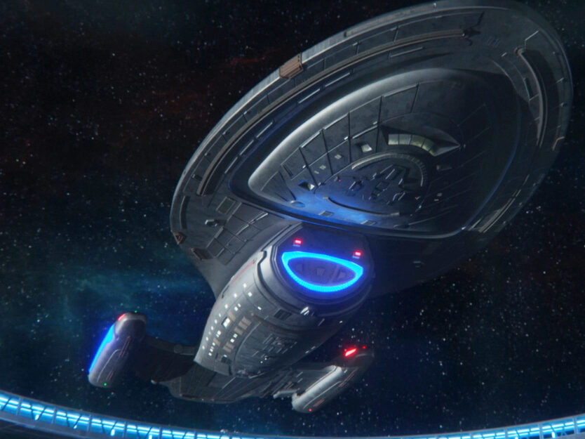
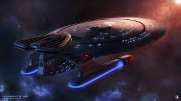
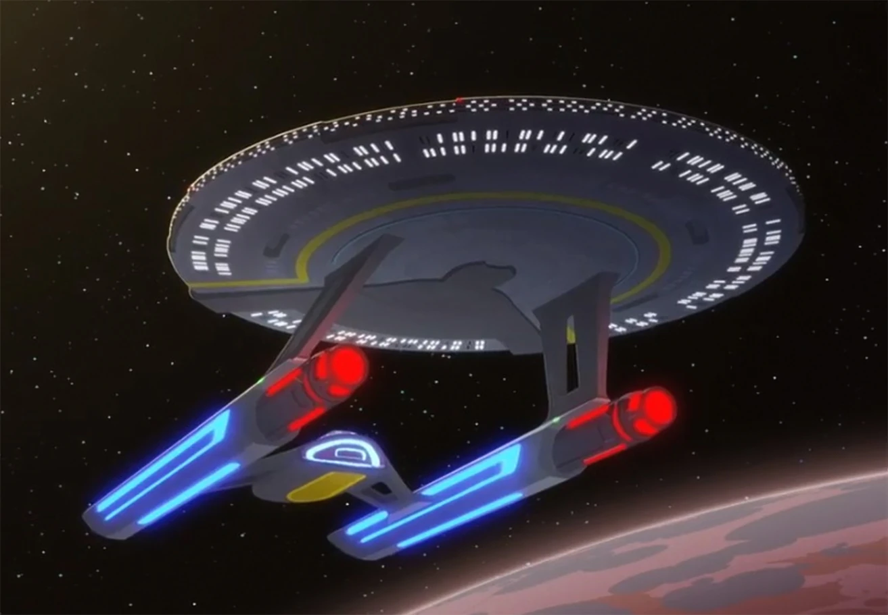

-
USS ENTERPRISE
Descrição
Inspirada na fragata francesa L'Enterprise capturada pelos britanicos em 1705, a USS Enterprise é a nave captânia da frota estelar, tendo como número de registro a sigla NCC-1701. -
USS DISCOVERY
Descrição
A unica da classe Crossfield, a Discovery foi oficialmente construída para ser uma nave científica com capacidades de se defender. Devido a sua característica é capaz de acomodar até 300 missões científicas discretas, um recorde da frota.
-
USS PROTOSTAR
Descrição
A USS Protostar (NX-76884) foi uma nave da Federação da classe Protostar lançada pela Frota Estelar no final do século XXIV. O Protostar foi um protótipo aprovado para produção em uma classe de navio completo após a destruição da nave em 2384.
-
USS VOYAGER
Descrição
Uma das naves estelares mais célebres da história da Frota Estelar, a Voyager ficou famosa por completar uma viagem não programada de sete anos através do Quadrante Delta, a primeira exploração bem sucedida desse quadrante pela Federação, bem como inúmeras inovações tecnológicas e primeiros contatos.
-
USS FARRAGUT
Descrição
A USS Farragut (NCC-1647) foi uma nave estelar classe Constitution do século 23 comandada pelo Capitão Charles Garrovick. .
-
USS CERRITOS
Descrição
A USS Cerritos (NCC-75567) foi uma nave estelar da classe da Federação Califórnia operada pela Frota Estelar no século 24, sob o comando da Capitã Carol Freeman.